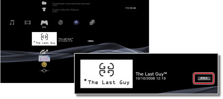

Игра > Воспроизведение игр, загруженных из PlayStation®Store > Воспроизведение загруженных игр
Воспроизведение загруженных игр
Вы можете воспроизводить игры, загруженные (платно или бесплатно) в магазине  (PlayStation®Store). Вариант воспроизведения зависит от типа игры. Сведения о типе игры отображаются рядом с пиктограммой игры.
(PlayStation®Store). Вариант воспроизведения зависит от типа игры. Сведения о типе игры отображаются рядом с пиктограммой игры.

Подсказка
Чтобы отсортировать игры по типу, выберите пиктограмму игры, нажмите кнопку  и выберите [Отобрать по] > [Формат] в меню параметров.
и выберите [Отобрать по] > [Формат] в меню параметров.
Воспроизведение программного обеспечения формата PlayStation®3

Как правило, программное обеспечение формата PlayStation®3, загруженное из магазина (PlayStation®Store), используется так же, как программное обеспечение формата PlayStation®3, поставляемое на дисках. Подробнее об этом см. в разделе  (Игра) > [Воспроизведение программного обеспечения формата PlayStation®3] в данном Руководстве.
(Игра) > [Воспроизведение программного обеспечения формата PlayStation®3] в данном Руководстве.
Воспроизведение программного обеспечения формата PlayStation®
Как правило, программное обеспечение формата PlayStation®, загруженное из магазина (PlayStation®Store), используется так же, как программное обеспечение формата PlayStation®, поставляемое на дисках. Подробнее см. в разделе (Игра) > [Воспроизведение программного обеспечения формата PlayStation®2 и PlayStation®] в данном Руководстве.
Руководства по программному обеспечению
Существует возможность просмотра руководства по программному обеспечению для загруженного программного обеспечения формата PlayStation®. Во время игры нажмите кнопку PS на беспроводном контроллере, затем выберите [Руководство по программному обеспечению] на отображаемом экране.
Игры, для которых требуется переключение дисков
Некоторое загруженное программное обеспечение формата PlayStation® требует переключения дисков. При воспроизведении таких игр на системе PS3™ выполняется виртуальное переключение дисков. Если появляется сообщение с просьбой переключить диски, нажмите кнопку PS на беспроводном контроллере и выберите на появившемся экране [Переключить диск]. Далее следуйте инструкциям на экране.
Воспроизведение игр формата PC Engine
Подробнее о воспроизведении игр формата PC Engine рассказано в руководстве пользователя к игре. Способы просмотра руководства пользователя к разным играм могут различаться. Формат PC Engine может не поддерживаться в вашей стране или регионе.